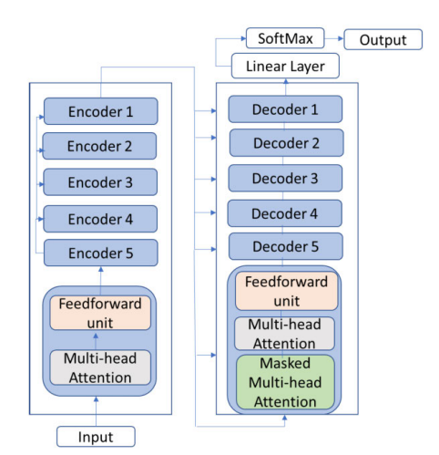

This review aims to provide an overall understanding and familiarity with recent neural networks based on abstractive text summarization models. Text summarisation aims to reduce the length of a text while keeping the main idea consistent and intact. It has become one of the main challenges in today's natural language processing (NLP) studies because of the huge amount of text data daily produced on the web and the need of extracting useful and meaningful information. It is divided into two main branches: extractive text summarization and abstractive text summarization. While extractive text summarization summarizes text utilizing the same words from the original text, abstractive text summarization creates a summary generating previously unseen text. The latter has received a lot of attention due to its superior capability of generating summaries while keeping the whole meaning of the source. Main abstractive text summarization models are based on Recurrent Neural Network (RNN) and Convolutional Neural Network (CNN) but lately, Transformers and pre-trained models have demonstrated to do better in most aspects. The review will focus on the evolution and development of abstractive text summarization models, starting from RNNs and CNNs to Transformers and pre-trained models which are considered to be state-of-the-art today. At the very end, we assess the limitations and challenges that still need to be tackled. Furthermore, a possible research topic is proposed for future investigation: the use of a sentiment score to support the classic ROUGE metric to evaluate the summarized texts.
Abstractive text summarization, Natural Language Processing, Pre-trained model, Transformer, Automatic Text Summarization.
The number of text data is increasing every day: news websites, blogs, social media platforms, scientific research and much more. Dealing with this amount of data is not easy and the collection of useful information has become increasingly challenging. Extracting the most essential and meaningful text content from a longer text source is known as text summarization and despite the lack of advanced computing technologies, its development started in the late 50s (Orsan, 2013). Text summarization in the early days was implemented exclusively using rule-based algorithms called "importance evaluator". They worked based on ranking different parts of a text according to their importance (Prasasthy, 2021). As research techniques improved, a lot of effort was spent on interpreting sentence importance; one algorithm that raised attention and it's still widely used today is term frequency-inverse document frequency (TF-IDF). More recently, text summarization using neural networks has seen great development due to its capabilities and great summarization results, going from sequence-to-sequence models to pre-trained Transformers.
Summarization is a mapping task which maps an input sequence to the output sequence (Etemad, et al., 2021), automatic text summarization can be classified into two categories: extractive text summarization and abstractive text summarization. Most of the earlier research focus on extractive text summarization while now the trend shifted towards abstractive methods. The first selects significant sentences or phrases from source materials and organizes them into a synopsis without modifying the original text (Abhinav, 2022) while with the latter, the summary is generated by the summarizer itself: words, phrases and sentences are not extracted from the source but instead new are generated. Abstractive methods are more complex and challenging to work with because of the new text that must be generated. Moreover, the extractive summarization method is concatenating important sentences or paragraphs without understanding the meaning of those sentences, while an abstractive summarization method is generating a meaningful summary readable semantically and syntactically (Pai, 2014). Although both methods are different, they share a common purpose: generating summaries that are meaningful, non-repetitive, and coherent.
In general, three main approaches for abstractive text summarization have been identified: structure approach, semantic-based approach, and neural network approach (Govilkar, 2019). Structure-based methods work by encoding data from text documents based on some logical arrangements (Syed, et al., 2021) while semantic methods involve inputting the semantic representation of the text document to a natural language generation module to obtain the desired summary (Tandel, et al., 2019). Among these three methods, the most recent progress has been made with a neural network approach, where sequence to sequence models are the foundation of the most recent studies (Klymenko, et al., 2020).
Before the raise of pre-trained models and transformers, two special types of neural networks (CNN and RNN) were used with sequence-to-sequence models for summarization tasks (Yang, 2019). These neural network frameworks were initially meant for text translation, but they achieved great results on text summarization as well. The problem with these models is that if text translation assumes that the length of the input is roughly the same as the output, for text summarization this rule is not valid anymore. Pre-trained models which train on large unlabelled datasets brought a revolution in the text summarization task.
Neural abstractive summarization systems use an encoder-decoder architecture. The encoder captures the thought of the source sequence into a continuous vector from which the decoder generates the target summary (Tandel, et al., 2019). Neural summarization systems need some mechanisms to be added to address some issues of abstractive text summarization and thus improve summaries. In most recent models, attention mechanisms have gained a lot of interest due to their capability to direct more focus and attention on certain chunks of input data (Syed, et al., 2021). Using this mechanism, transformers represent today the state of the art of abstractive text summarization. A transformer is a deep learning model that adopts the mechanism of self-attention, differentially weighting the significance of each part of the input data. They are designed to handle sequential input data, such as natural language, for tasks such as translation and text summarization. However, unlike RNNs, transformers do not necessarily process the data in order (Wikipedia, 2022).
Because measuring the correctness of the summaries is difficult, most text summarization research uses ROUGE as the standard evaluation metric. ROUGE, which stands for Recall-Oriented Understudy for Gisting Evaluation, includes a set of scores for evaluating abstractive text summarization and machine translation tasks. ROUGE metric is designed to measure the lexical similarity, i.e., the overlap, of n-grams between the resulting summary and a reference, usually a human-written summary (Alomari, et al., 2022).
The overview will be conducted by giving a general picture of the state-of-the-art methods used for abstractive text summarization and their evolution: starting from RNNs and CNNs to transformer-based pre-trained models. We are going to understand the workflow behind them, how they function, the improvements that have been made through recent years and the future challenges.
RNNs are neural networks with a different architecture compared to feed-forward architectures. They have the capability, through loops, to allow information to persist and thus introduce the concept of memory in neural networks. Due to their feedback nature, these networks can learn information based on context and are very well suited for sequential data (Syed, et al., 2021).
Alexander M.Rush (2015) proposed an attention-based models build as follows (Tandel, et al., 2019):
RNN has some drawbacks like gradient vanishing and low parallelization capabilities. Long Short-Term Memory (LSTM) model has solved the gradient vanishing problem but not the computational complexity. CNNs can solve most RNNs problems – using this neural network the computational complexity is linear with the data (Etemad, et al., 2021). Zhang et al. (2019) presented a multi-layer CNN with a coping mechanism that deals with rare words. Also, Yang et al. (2019) proposed the same year a hybrid learning model to create a summary that is as much as possible similar to the human-like reading strategy. This model consists of three major components, a knowledge-based attention network, a multi-task encoder-decoder network, and a generative adversarial network, which are consistent with the different stages of the human-like reading strategy.
Pre-trained and Transformers based models have reached state-of-the-art performance in several NLP tasks. Vaswani et al. (2017) introduced Transformer as a basis model for most of today's state-of-the-art NLP models. They are based on attention mechanisms that don't make RNNs and CNNs needed and have an encoder-decoder architecture stacked multiple times (Syed, et al., 2021). The architecture proposed by Vaswani et al. is composed of six encoding layers and six decoding layers with a SoftMax processing layer before output.

Transformers were first introduced by Google Brain, with their parallelization capabilities and increased computational power, they brought to the development of pre-trained models with the capability of working on large text corpora as well. A breakthrough and revolutionary model was presented by Devlin, et al., (2018). He introduced BERT - Bidirectional Encoder Representations from Transformers. It is a transformer-based machine learning model for NLP firstly used by Google in 2019 becoming a standard for NLP experiments with over 150 papers (Wikipedia, 2022). BERT has been pretrained on more than 800M words from the BooksCorpus and its structure is very similar to the one of Vaswani et al, using transfer-learning techniques to perform NLP tasks. The key improvement in BERT over past models is making use of sequential transfer learning, where training is done using a Masked Language Modelling and a "next sentence prediction" task on a corpus of 3300M words (Prasasthy, 2021).
In the same year Alec Radford et al. (2018), supported by OpenAI, released GPT, showing how a generative model can acquire world knowledge and process long-range dependencies by pre-training on a diverse corpus with long stretches of contiguous text (Wikipedia, 2022). Both BERT and GPT are transformer-based and the main difference between the two is that the first can perform bidirectional training while the second is only unidirectional (Syed, et al., 2021). As of today, GPT has evolved to GPT-3, containing more than 175 billion parameters (Brown, et al., 2020). However, GPT-3 still suffers from several weaknesses. For example, it still struggles with several inference and reading comprehension tasks. Also, it has structural and algorithmic limitations. Poor pre-training sample efficiency is another limitation. Other shortcomings include the possibility of generating text with trivial errors, high-cost inferencing, and the uncertainty about whether the model learns new tasks based on pre-trained learning or from scratch (Alomari, et al., 2022).
Lewis, et al., presented BART in 2019, a denoising autoencoder for pretraining sequence-to-sequence models. BART is trained by corrupting text with an arbitrary noising function, and learning a model to reconstruct the original text. It uses a standard Transformer-based neural machine translation architecture which, despite its simplicity, can be seen as generalizing BERT (due to the bidirectional encoder), GPT (with the left-to-right decoder), and many other more recent pretraining schemes. BART is particularly effective when fine-tuned for text generation but also works well for comprehension tasks (Lewis, et al., 2019)
Recently Google and his research team have proposed another abstractive summarization technique called PEGASUS (Pre-training with Extracted Gap-sentences Abstractive Summarization Sequence to sequence models) which represents one of the state-of-the-art models for abstractive text summarization. With PEGASUS, important sentences are removed/masked from an input document and are generated together as one output sequence from the remaining sentences, similar to an extractive summary (Zhang, et al., 2020). Raffel, et al. (2020) by combining the insights from the exploration with scale and by using the new "Colossal Clean Crawled Corpus", achieved state-of-the-art results on many benchmarks covering summarization. The basic idea behind this work is to produce a text-to-text framework that takes a text as input and produces a new text as output – basically, it treats all the text processing problems as text-to-text problems (Etemad, et al., 2021).
This review presents a brief overview of the progress made in abstractive text summarization during the last years. We went from RNNs and CNNs to advanced pre-trained transformers models describing their framework at a high level and going through the improvements that have been made through the years. Major companies like Meta, Google and OpenAI are working extensively on language models to contribute to the progress of NLP tasks.
As of today, the biggest scores have been achieved with pre-trained transformer-based models. There are still many challenges to face in the future; neural network sequence-to-sequence models normally focus on summarizing short-length documents and still produce low-quality and incoherent summaries, especially when the length of the input text is increased. Also, their summaries resulted in high copy rates (Alomari, et al., 2022). Using pre-trained transformer-based models can partially solve the above-mentioned problems but quadratic memory and computational complexities are the main drawbacks of the self-attention mechanism used by the Transformer (Alomari, et al., 2022). Other problems in text summarization are: data loss (Talukder, et al., 2020), production of inaccurate factual details (Syed, et al., 2021), and that text summarization tasks are mainly evaluated with the ROUGE score, providing no insight into novelty, readability, and semantic similarities. Moreover, the novelty score is inversely proportional to that of ROUGE making the finding of an optimal measurement still an open research question (Alomari, et al., 2022).
This limitation could be further explored: possible future research could be to investigate the possibility to support the ROUGE score of summarized text using sentiment analysis. The idea is to see if the sentiment score of the not summarized text reflects the score of the summarized one, perhaps correlating the sentiment score with ROUGE and strengthening the meaning of the latter.